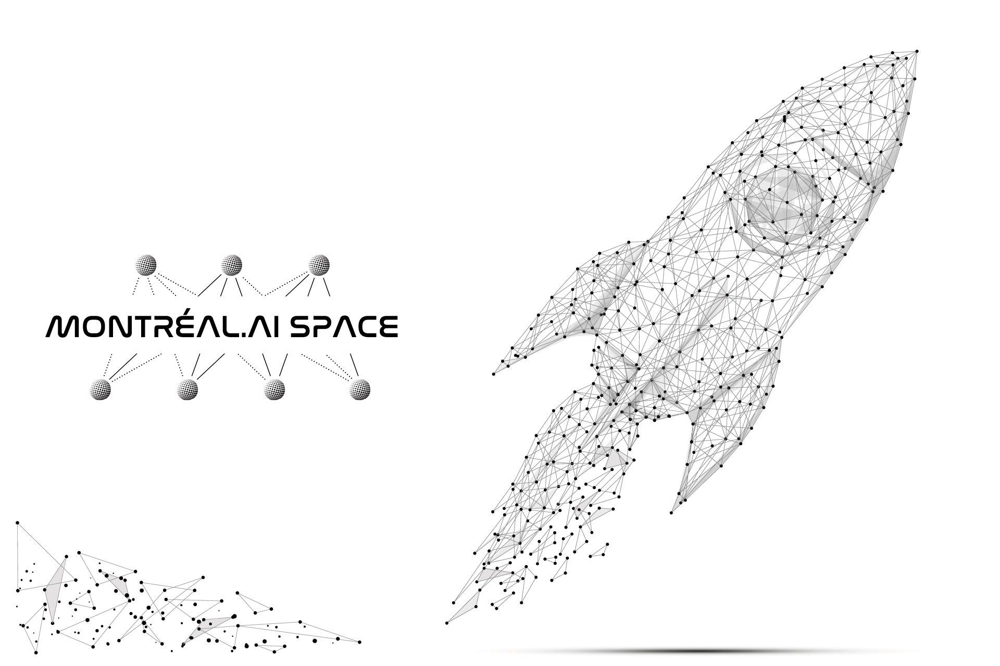

MONTRÉAL.IA Aérospatial
Une nouvelle ère de prouesses techniques percutantes à une échelle véritablement mondiale.
, président-fondateur de MONTRÉAL.IA")
MONTRÉAL.IA Aérospatial s’appuie sur l’ingénierie aérospatiale, l’IA appliquée et la recherche en astrophysique pour optimiser les vols spatiaux, l’efficacité des satellites, et l’exploration spatiale à une échelle sans précédent.
“Conscients que Montréal est un pôle mondial de l’industrie aérospatiale et un chef de file international en intelligence artificielle, nous avons fondé MONTRÉAL.IA Aérospatial.“ — Vincent Boucher, B. Sc. Physique, M.A. Analyse des politiques gouvernementales et M. Sc. Génie aérospatial (technologie spatiale), président-fondateur de MONTRÉAL.IA
Un nouveau modèle pour un grand nombre de géants émergents à l’intersection de l’IA et de l’aérospatial.
Un parcours légendaire | Comment tout a commencé — Découvrez la genèse de cet exceptionnel cheminement:
- Vincent Boucher | … un cerveau de l’aérospatial! — Le journal de Montréal
- Étoiles filantes | Vincent Boucher — Le bulletin des employés de l’Agence spatiale canadienne
- Vincent Boucher | Un (jeune) homme d’exception — Nathalie Petrowski, La Presse
MONTRÉAL.IA Aérospatial: Vision globale
IA + Aéronautique | Physique | Robotique
Vision : Être la pierre angulaire de l’industrie de l’IA aérospatiale.
MONTRÉAL.IA Aérospatial a un statut particulier dans le portefolio de Montréal.IA.

“Mon objectif est simple. C’est la compréhension complète de l’univers, pourquoi il est tel qu’il est et pourquoi il existe.“ — Stephen Hawking
MONTRÉAL.IA Aérospatial croit à l’épanouissement de l’Humanité en misant sur la superintelligence pour explorer les étoiles
Montréal.IA Aérospatial: Relever les défis les plus difficiles
Nous sommes au seuil d’un changement technologique mondial.
Montréal.IA Aérospatial: Explorer les étoiles et l’Univers
Nous vivons une période de percées scientifiques incroyables. Les progrès à venir, au carrefour de l’ingénierie aérospatiale et de l’intelligence artificielle, ouvrent des perspectives extraordinaires pour l’avenir de l’Humanité.
“Artificial Intelligence is about recognising patterns, Artificial Life is about creating patterns.“ — Mizuki Oka et al, #alife2018
Avec plus d’ingéniosité, nous mettons en œuvre des agents IA très performants pour concevoir des algorithmes d’apprentissage en profondeur innovants comprenant notre Univers.
Montréal.IA Aérospatial offre une nouvelle ère globale de prouesses techniques percutantes à un niveau très élevé.
Références
- Why does deep and cheap learning work so well? — Henry W. Lin, Max Tegmark, David Rolnick
- Introduction to astroML: Machine Learning for Astrophysics — Jacob VanderPlas, Andrew J. Connolly, Zˇeljko Ivezic ́, Alex Gray
- CosmoFlow: Using Deep Learning to Learn the Universe at Scale — Mathuriya et al.
- Bayesian Deep Learning for Exoplanet Atmospheric Retrieval — Frank Soboczenski, Michael D. Himes, Molly D. O’Beirne, Simone Zorzan, Atilim Gunes Baydin, Adam D. Cobb, Daniel Angerhausen, Giada N. Arney, Shawn D. Domagal-Goldman
- Galaxy morphology prediction using capsule networks — Katebi et al.
- Machine Learning for Physics and the Physics of Learning — Steve Brunton, Cecilia Clementi, Yann LeCun, Marina Meila, Frank Noe, Francesco Paesani
- MINERVA-II1: Successful image capture, landing on Ryugu and hop! — JAXA | Japan Aerospace Exploration Agency
- Restricted Boltzmann Machines for Collaborative Filtering — Ruslan Salakhutdinov, Andriy Mnih, Geoffrey Hinton
- A Practical Guide to Training Restricted Boltzmann Machines — Geoffrey Hinton
- GAIA DATA RELEASE 1 — European Space Agency
- Evolved Virtual Creatures, Evolution Simulation, 1994 — Karl Sims
- PHYSICS | MACHINE LEARNING - Recent papers combining the fields of physics and machine learning — physicsml
- AI Model Could Help Robots Navigate on the Moon and Mars Without GPS — NVIDIA
- Machine Learning and Likelihood-Free Inference in Particle Physics Slides | Video — Kyle Cranmer
- Enabling Dark Energy Science with Deep Generative Models of Galaxy Images — Siamak Ravanbakhsh, Francois Lanusse, Rachel Mandelbaum, Jeff Schneider, Barnabas Poczos
- Unity and DeepMind to Advance AI Research Using Virtual Worlds — Business Wire
- A look at deep learning for science — Prabhat
- Searching for Exotic Particles in High-Energy Physics with Deep Learning — Pierre Baldi, Peter Sadowski, Daniel Whiteson
- Estimating Cosmological Parameters from the Dark Matter Distribution — Siamak Ravanbakhsh, Junier Oliva, Sebastien Fromenteau, Layne C. Price, Shirley Ho, Jeff Schneider, Barnabas Poczos
“MONTEZ DANS LA FUSÉE”: Rejoignez MONTRÉAL.IA Aérospatial!
Réunissant des contributions de chercheurs reconnus comme étant les principales autorités dans leur domaine, MONTRÉAL.IA Aérospatial est en avance sur une tendance qui influencera profondément l’avenir de l’Humanité.
“Toute technologie suffisamment avancée est indissociable de la magie.“ — Arthur C. Clarke
MONTRÉAL.IA Aérospatial est à la recherche d’associés et de partenaires prospères: capitaines d’industrie, philanthropes, entrepreneurs en technologie de pointe, financiers and érudits de haut vol pour se joindre à notre équipe dans cette tâche aux proportions historiques.
✉️ Courriel : info@montreal.ai
📞 Téléphone : +1.514.829.8269
🌐 Site web : http://www.montreal.ai/
📝 LinkedIn : https://www.linkedin.com/in/montrealai/
🏛 Secrétariat Général de MONTRÉAL.IA : 350, RUE PRINCE-ARTHUR OUEST, SUITE #2105, MONTRÉAL [QC], CANADA, H2X 3R4 *Conseil exécutif et bureau administratif
#IntelligenceArtificielle #IntelligenceArtificielleMontreal #MontrealIA